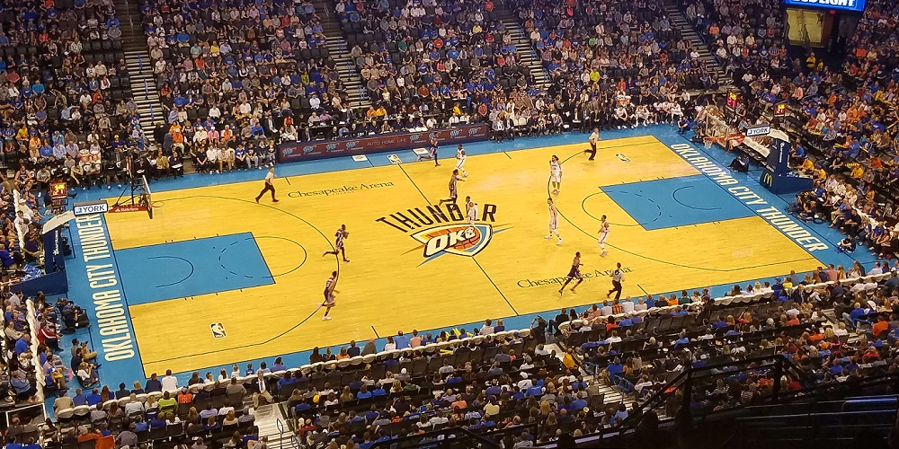
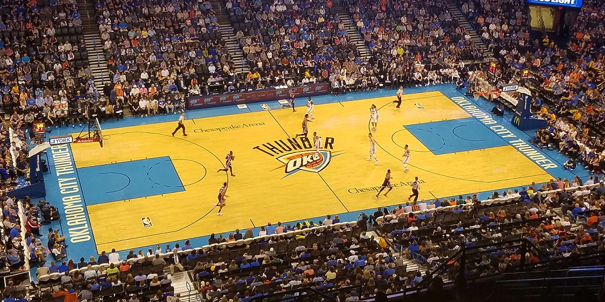
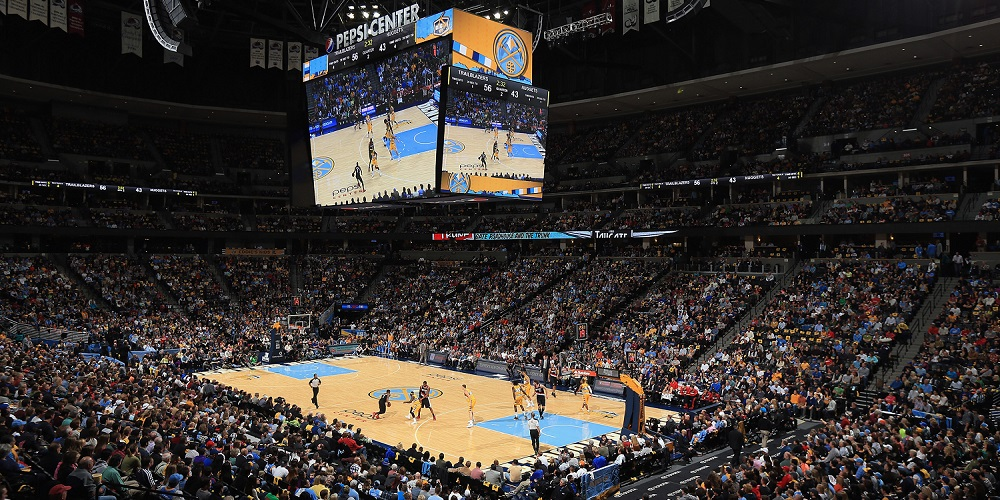
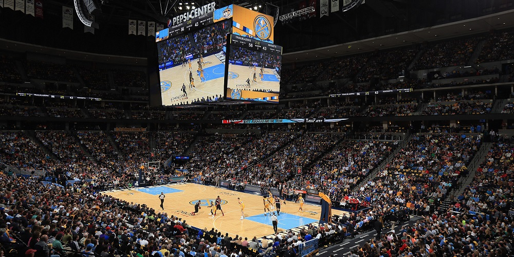

Golden State Warriors juega en la NBA con base en Oakland, California, deriva del sobrenombre con que se conoce al estado de California, The Golden State (Estado Dorado), derivado de la Fiebre del Oro de 1849 y de sus doradas colinas. Actualmente hay un plan de traslado del equipo, previsto para la temporada 2019-20. Para esa fecha, la franquicia fijará su sede en San Francisco (California), ciudad donde ya estuvo instalado el equipo anteriormente, y disputará sus partidos en el Chase Center, actualmente en construcción. Fueron los primeros de la NBA en incorporar mangas en las camisetas. Anteriormente las llevaron los Boston Celtics en la temporada 1946-47 cuando todavía no se había fundado la NBA.


 



 
